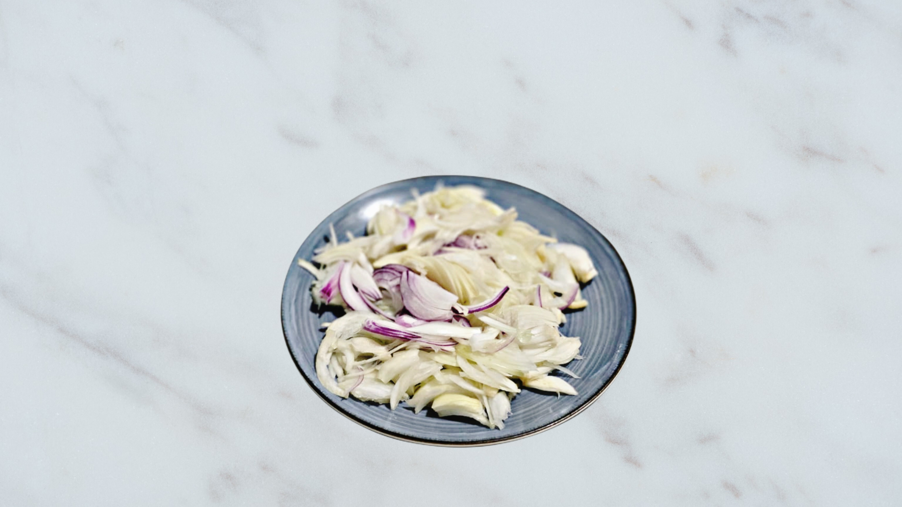
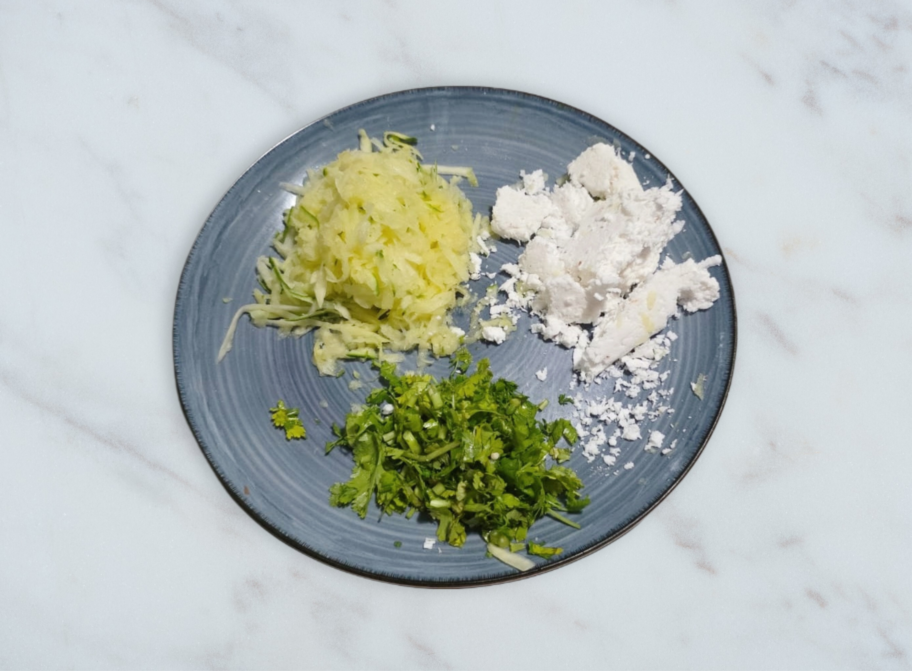
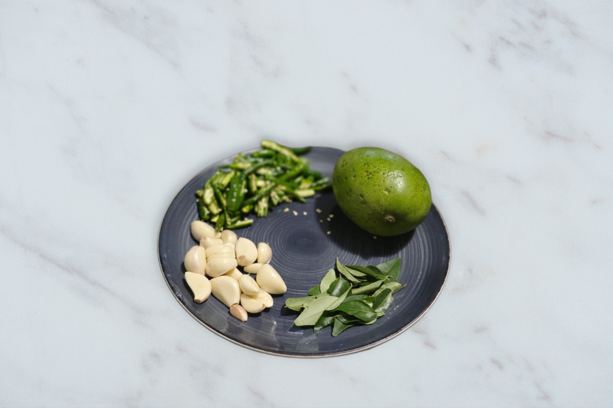
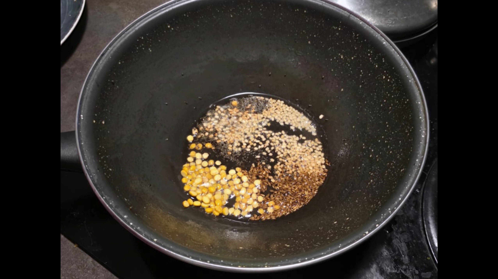
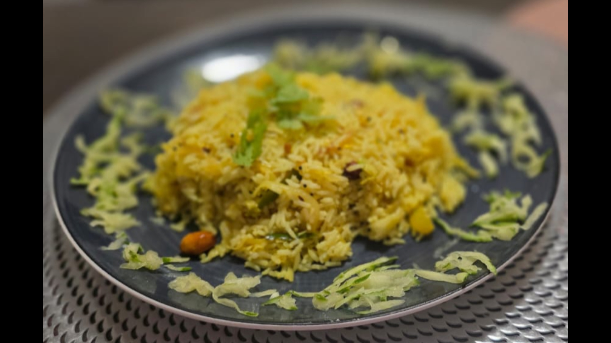
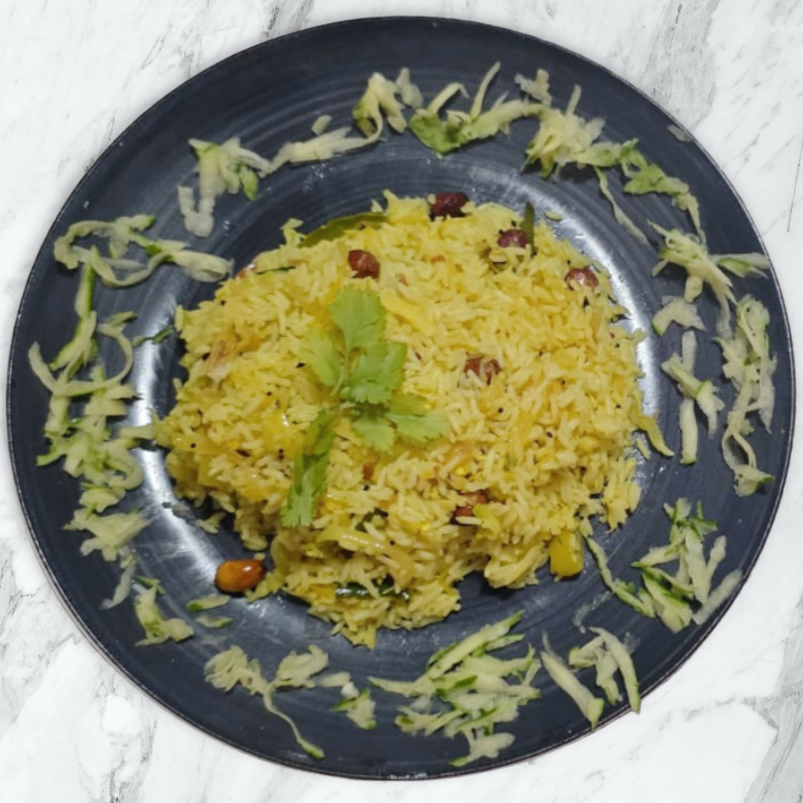

Mavinakaayi Chitranna - "ಮಾವಿನಕಾಯಿ ಚಿತ್ರಾನ್ನ" - Raw Mango Rice
A tangy and refreshing South Indian rice dish made with raw mangoes, tempered with aromatic spices, and garnished with fresh herbs. This traditional recipe brings together the perfect balance of sour, spicy, and savory flavors that will transport you straight to the heart of Karnataka.

Ingredients
- 2 cups cooked rice
- 2 finely chopped onions
- 1 medium raw mango, grated
- 2 tablespoons oil
- 1 teaspoon mustard seeds
- 1 teaspoon cumin seeds
- 1 teaspoon urad dal
- 1 teaspoon chana dal
- 1 complete garlic pod
- A pinch of asafoetida
- 3-4 finely chopped dry red/green chilies
- 10-12 curry leaves
- 1/4 cup peanuts
- 1/4 teaspoon turmeric powder
- Salt to taste
- Fresh coriander leaves for garnish
Instructions
-
Prepare the Rice
Cook rice and let it cool completely.
 -
Prepare the Mango
Wash and peel the raw mango. Grate it finely and set aside. Chop the onions finely and set aside.
 -
Make the Tempering
Heat oil in a large pan. Add cumin seeds, mustard seeds, and asafoetida. Let them splutter. Add urad dal, chana dal, and dry red chilies. Fry until the dals turn golden brown. Add the chopped onions and fry until they are golden brown.
 -
Add Aromatics
Add curry leaves and peanuts. Fry for a minute until the peanuts are slightly roasted.
 -
Combine Everything
Add turmeric powder and grated raw mango. Mix well and cook for 2-3 minutes until the mango softens slightly.
-
Mix with Rice
Add the cooled rice and salt. Gently mix everything together, taking care not to break the rice grains.
 -
Garnish and Serve
Garnish with fresh coriander leaves and serve warm or at room temperature.

Notes & Variations
Notes
- Choose firm, green raw mangoes for the best tangy flavor.
- You can adjust the amount of raw mango based on how tangy you prefer the dish.
- For a spicier version, add finely chopped green chilies during tempering.
- This dish can be stored in the refrigerator for up to 2 days.
Variations
- Add grated coconut for a richer flavor.
- Include roasted cashews for extra crunch.
- Try with different types of rice like brown rice or basmati rice.
- Add finely chopped vegetables like carrots or beans for extra nutrition.
Comments